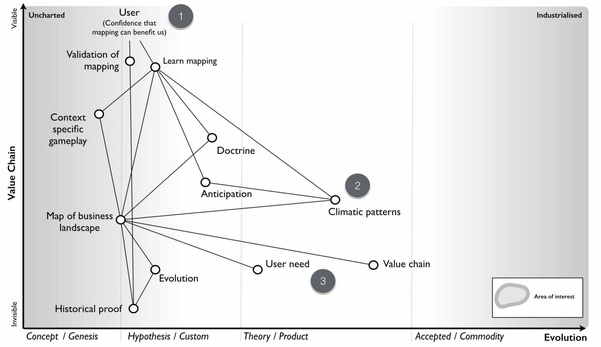

Chapter 7
39 min read
It was 2007, I was at home and I was unemployed. I twiddled my thumbs for a couple of days, did some DIY and then set about thinking on my future. This is code for watching my bank balance plummet whilst not doing anything useful. I was exhausted, running a company, inspiring a future and being broadsided had taken its toll. However, whilst I wasn’t ready to immerse myself into a new role, I couldn’t just sit idle. So, I undertook a few paid speaking gigs, did some advisory work, wrote a few articles, ghost wrote a few more and researched. At least, it would keep the wolves at bay for a bit.
I was convinced that there was some mileage in the mapping concept but I had two major problems. First, I had failed to create that bright future with it. Second, I had no real evidence to support it. I had collected data that hinted components evolved but the evolution axis was no more than a pattern that I had observed and talked about at Euro Foo in 2004. Maybe it was completely wrong? Maybe that’s why I failed? Maybe that’s why no-one else seemed to be talking about these concepts? I decided my library wasn’t big enough to answer these questions and became a reader at the British Library. I collected, collated and trawled through a huge volume of written work in pursuit of my answers. At the very least, I was keeping myself busy and providing time to recoup.
As I read more into the subject of strategy then I noticed that disquiet over the field was palpable. Phil Rosenzweig, in the Halo Effect (2007) pointed to the cause being a marriage of convenience: “Managers are busy people, under enormous pressure to deliver higher revenues, greater profits and ever larger returns for shareholders. They naturally search for ready-made answers, for tidy plug-and-play solutions that might give them a leg up on their rivals. And the people who write business books — consultants and business school professors and strategy gurus — are happy to oblige.”
I wanted to change this, to somehow give people the tools they needed to learn themselves by exposing that secret tome of strategy to everyone. I wanted to be free of this marriage of convenience. I still believed there was a secret tome back in 2007 and that it was probably guarded in the halls of business schools. I started to think about doing an MBA, shuddered at the expense and borrowed copious notes and books from friends who had. However, I was disappointed. Beyond basic concepts in financial, marketing and operational “strategy” there was no discussion of landscape or context. Maybe the tome was guarded in the halls of strategy consultancies themselves?
I applied for a job with one of the more prestigious consultancy firms and I was invited to a competitive interview process with dozens of other candidates. We would be put through our paces in a number of rounds in a Darwinian battle, a survival of the fittest. In my first round I was asked a question — “A news media company is looking at divesting itself of its print and distribution business. What things should it consider?”
I immediately starting mapping out the landscape, pointing to opportunities and impacts from loss of control through disposal of such physical capital to provision of distribution as a public utility to redirecting print capabilities into printed electronics — “those large scale printers have the potential to be tomorrow’s Intel I declared!” There was a wealth of opportunity but before making a choice then we needed to understand the landscape more. I started to dig, asking questions about the user, their needs and what did we understand about the landscape. I met a wall of silence followed by the line that “it’s not relevant”. The company had already decided to take this action. It was part of its strategy. My role was to give some input into how to achieve this. I asked what was this strategy based upon and an argument ensued. Needless to say, I didn’t make it past round one and was the very first to leave the competition. Mapping had failed on its second outing. So I carried on researching.
It was at this time that I was also becoming quite well known in certain technology circles as a speaker on open source, web 2.0 and cloud computing. I kept being invited to more and more conferences and to present and discuss on technology changes within companies. I was flattered but quickly discovered that I needed to keep things simple. I was told the mapping concepts were just “too confusing” and so I restricted myself to talking about the impacts in more general terms. However, here I hit a snag. General concepts such as the world moving towards more utility provision of IT were often brushed aside for lacking any understanding of “real business” and the maps I needed to demonstrate why this would happen were considered “too confusing”. I felt increasingly trapped in a Paul Valéry paradox of “Everything simple is false. Everything which is complex is unusable”. I found myself sitting in rooms listening to conversations of the form: -
CTO: “All the new servers are installed; systems are running fine”.
CIO: “Excellent. Apparently the latest thing is cloud, hence I’ve asked Simon to come along. According to this business magazine then numerous successful companies are considering future pilots that might use it. We should look into it and whether it’s worth considering as part of our long term strategy.”
CTO: “We’ve already examined the subject. Cloud just means virtualisation of the data centre. The latest research I have says that virtualisation has entered the plateau of performance and provides an extremely efficient mechanism of infrastructure provision over our existing data centre technology. Our technology partners have virtualisation based products in this space that we should consider buying.”
CIO: “Excellent work. Well let’s look at getting this up and running. There’s some business interest and I’d like to tell the CEO we’ve been using cloud if it comes up in conversation. We don’t want to be left behind in this technology war. Any thoughts Simon?”
It sounded so simple but it was so wrong, my heart always sank. To explain why, I’m going to perform a mental translation that I started to do by converting IT speak into military speak. For some reason, I just find it becomes easier for people to understand.
Captain: “All the new cannons arrived. We installed them and fired them this morning.”
Colonel: “Excellent. Apparently the latest thing is bombing hills, hence I’ve asked Simon to come along. According to General’s weekly then numerous successful military leaders are considering future campaigns that might use it. We should look into it and whether it’s worth considering as part of our long term strategy.”
Captain: “We’ve already examined the subject. Bombing hills just means using mortars. The latest research I have says that mortars have entered the plateau of performance and provide an extremely efficient mechanism of killing compared to our existing technology. Our technology partners have mortar based products in this space that we should consider buying.”
Colonel: “Excellent work. Well let’s look at getting this up and running. There’s some military interest and I’d like to tell the general we’ve been bombing hills if it comes up in conversation. We don’t want to be left behind in this technology war. Any thoughts Simon?”
There seemed to be an overwhelming predilection towards copying others, technology faddism and buying pieces of kit rather than dealing with the problems at hand. There was no discussion of the users, the landscape or how it was changing. When I would raise how cloud was simply an evolution of an existing act from product to more industrialised utility models and as such it was more of change of business model rather than buying some tech … well, it was almost like I had spoken heresy in gobbledygook.
Business and IT both seemed to be operating in an environment that they did not understand and often with an assumption that buying more high tech wins the day. But this is flawed. Low tech can be used to overcome a high tech opponent that has poor situational awareness. The U.S. Seventh Cavalry, with access to gatling guns and “hi-tech” weaponry suffered a severe defeat at the Battle of the Little Bighorn against bows, arrows and stone clubs. Occasionally I would let my guard down and deep dive into the topic thereby hitting the other side of Valéry’s paradox. Nearly every time I did this, I was dismissed by the simple question “what evidence do you have that evolution works in this way?”
Unbeknownst to me, I had just been given a new purpose by others. I had my own crusade, to explain topographical intelligence to the world of business and to provide an “uncommon sense to the common world of strategy”. It wasn’t quite as catchy as “Pre-shaved Yaks” but it became the title of my first failed attempt to write a book on mapping in 2007.
I needed to demonstrate or disprove the concept of evolution in technology and mapping itself. I had no clue on how to do this but that didn’t stop me becoming a bit obsessed. My beard grew longer and I’m pretty sure I was mumbling mapping in my sleep. The reason why my purpose became all-consuming was it had two other things that mattered. First, it had a defined scope that was tangible and could be understood i.e. I was looking at the validity of this mapping technique. Second, it also had a moral imperative, I was rebelling against the hordes of management consultants that enslaved us with 2x2s in this marriage of convenience! It felt good. I had: -
Purpose: Explain topographical intelligence to the world of business.
Scope: Demonstrate or disprove the concept of evolution and mapping.
Imperative: Rebel against the hordes of management consultants that enslave us by enabling ordinary people to learn.
Being mindful of this purpose, I could now start thinking about the potential users of mapping and try to define what their needs might be. The users would need some way of exploiting mapping, some way of learning how to map given the complexity of the topic and also some sort of confirmation or validation that mapping was based upon something sensible. There was a chain of needs from purpose to user need (the very anchor of mapping) which I’ve drawn in figure 67.
Figure 67 — Purpose
Given I had user needs then the very least I could do was map out that environment. Taking the user need of “Confidence that mapping can benefit us”from above then I’ve created a map of what is involved in figure 68. I’ll use this to describe some particular points on mapping itself. One thing you will notice is the x-axis that I’m using here is slightly different. Whilst I normally just use the descriptions for activities (genesis to commodity), in this case because we’re talking about knowledge then I’ll add those descriptions for the different stages of evolution. For more on the terms used when describing evolution see figure 10 (chapter 2).
Figure 68 — A map of mapping

From the map above;
Point 1 — From “confidence that mapping can benefit us” then we had two high level user needs which were a means to learn mapping and some form of validation.
Point 2 — learning mapping requires not only the ability to create a map of the landscape but to understand common economic patters, doctrine and even context specific gameplay. Whilst common economic patterns are often discussed in a multitude of economic sources, the issue of context specific gameplay is fairly unique and rarely covered.
Point 3 — the map itself is based upon user needs (anchor) which is reasonably well discussed, a value chain (position) which itself is a common topic in business books but also evolution (movement). This last topic was rarely discussed back in 2007 other than in vague and hand waving notions. There were certainly concepts and competing hypothesis on how things evolved but no clear definitive path.
One of the first things that struck me was that there existed a chain of needs above my users. When I am a supplier of a component to others (e.g. providing nuts and bolts to a car manufacturer) then my map extends into their map. However, my map also extends into my own purpose and my own needs. In other words, any map is part of a wider chain of needs.
In figure 69, I’ve drawn an extended map from my purpose and my needs through to my user and their needs. I’ve reverted back to the more typical x-axis because you should be familiar that multiple types (activities, practices, data and knowledge) can be used on a map and it makes it less busy to just to show evolution terms for activities rather than all.
Figure 69 — The chain
From the map above;
Point 1 — we have my needs i.e. my purpose, my scope and my moral imperative. This is my why of purpose expressed as a chain of needs e.g. be the world’s best tea shop or teach everyone to map. Naturally, I’d hope that my purpose would lead to others doing something and hence there would be users. In 2007, my scope was relatively novel as few seemed to be talking about mapping. However, my imperative wasn’t quite so unique. There were many rallying against the imposed consultancy industry.
Point 2 — whilst I hadn’t expressed this before, I had an unwritten need to survive, to make revenue and a profit. This is a very common and well understood need. In my case, I hoped that I could achieve this by meeting my users’ needs of either teaching them how to map or helping them create advantage over others.
Point 3 — my users had needs themselves. If my needs (i.e. purpose) didn’t fit in some way with the needs of my users, then this mismatch was likely to cause problems. For example, if my highest purpose was to make profit rather than explain topographical intelligence, then I would be focusing on extracting money from my users (this is not one of their core needs) rather than providing a means of learning mapping and creating advantage (which is a core user need). You should always strive to generate revenue and profit as a direct consequence of meeting users’ needs and providing value to them.
There are few other subtler things worth noting about the map above. First, my purpose is part of a chain of needs and as such it is influenced by the underlying components as they evolve. Over time, if mapping and the related activities become more industrialised then a scope of “demonstrate the concepts of evolution and mapping” ceases to be relevant. Even my moral imperative might disappear if the world becomes one where everyone maps, learns about their environment and has rebelled against management consultants with their 2x2s. If you think back to the strategy cycle, this is simply a reflection of the issue that as you act, as your landscape changes then your purpose, scope, moral imperative and even how you survive have to adapt. Nothing is permanent.
The second thing to note is that everything is evolving. At some point in the future, I will need to adapt my scope not only because the underlying components have evolved but also that my scope has become industrialised. There would be a point that you will be able to read endless free guides on how to map and even wikipedia articles. If at that point might scope isn’t something else designed to meet users’ needs and provide value to them then I’ll be attempting to survive against free.
The final issue is the balancing act between different user needs. I thought I had learned that lesson in my past doomed attempt to build a platform future by ignoring one set of very powerful users (the board) but I repeated the same mistake in my strategy consultancy interview. I was trying to engage in a discussion on the environment whereas they needed a financial and HR analysis of impacts caused by a disposal. Whether it was the right or wrong decision wasn’t something they cared about and I wasn’t thinking about their needs. Any play I created may have been right but without support of these users then it didn’t matter.
This concept of conflict between user needs is worth exploring a bit more. Let us take a trawl back through time and imagine you’re the boss of a hypothetical gun company just when the market is learning how to industrialise mechanical components. We’re moving away from the world of highly customised mechanical components built by a cottage industry to having things like more uniform pipes and bolts. Let us imagine that you’ve taken a bold move and started to buy more standard bolts and pipes (for barrels). You then use these components in the manufacture of your guns by combining them with your skills and practice as gunsmiths. I’ve highlighted this in a map in figure 70. Remember, it’s a hypothetical and I’ve no idea how to actually make a gun.
Figure 70 — The hypothetical gun company
You are the gun company (point 1) and you’re reliant upon bolts (point 2) from a company that manufactures them (point 3). The first thing to note is that a map can cover many different organisations if you wish. Each of those organisations could be expanded into, providing more detail. When you map an environment then you’re only ever looking at a fraction of a vast chain of needs. Hence the importance of defining a scope that is tangible rather than attempting to create a perfect map of an entire industry right down to every knob and whistle. You will learn over time how to simplify maps but to begin with, keep your ambitions small. Think small! As in know the details (see chapter 4, doctrine).
In the above, I’ve highlighted that guns are evolving and heading towards more of a commodity. This can create conflict with your own desire to survive and your shareholders desire for profit as the revenue per unit decreases. Such change can be compensated by volume but the desire is always to keep the same margin but increase units. We almost want the thing to become ubiquitous but seen as unique. There are ways of achieving this through branding and persuading others that your “commodity” is somehow special. It’s not a rock, it’s a “pet rock” as Gary Dahl might say. Alternatively you can bundle new features or characteristics onto it. It’s not just a gun, it’s special gun that makes you popular or it’s a vacuum that doesn’t look suction!
At the same time your gun is becoming a commodity (something you may not want) then you do want the components that you consume in manufacturing your gun to become more commodity like. This will obviously reduce your cost. However, the shareholders of the bolt company would like to have volume operations but maintain the margin per unit. They’ll be hoping their management use branding to try and persuade you that their “commodity” is somehow special. It’s not just a bolt, it’s a special bolt that makes you popular with others or doesn’t lose suction! There will inherently be conflict between different types of users (whether customers, the business, shareholders or regulators) throughout the landscape.
But that conflict doesn’t even require another person. Your own purpose can create its own conflict when faced with an evolving landscape. Take for example my map of mapping above (figure 69). My moral imperative was to rebel against the hordes of consultants that enslave us. By definition I wanted mapping to spread far and wide. But as mapping spreads then my ability to make revenue from teaching others how to map will ultimately diminish especially as basic guides on mapping become free. I could either pursue a path of “it’s not just a map, it’s a special map that makes you popular with others” or I would have to find another way of surviving e.g. selling context specific forms of gameplay rather than just teaching people how to map.
Fortunately, context specific forms of gameplay aren’t just one thing. If I taught people how to exploit ecosystems with an ILC model (see chapter 5), then I should expect that model to become industrialised over time. However, mapping is itself a means of exploring and learning about new forms of context specific gameplay i.e. there should be a constant pipeline of new forms of gameplay as long as we are willing to learn.
I’ve drawn this map up in figure 71 below. Whilst teaching mapping will ultimately industrialise (point 1) there is also a constant pipeline of gameplay (point 2) with new forms of gameplay emerging. I could create a business, with a strong purpose and though it would have to adapt as components changed, there would be other opportunities for me to exploit. Even if I open sourced the mapping method to encourage it to spread (which I did by making it all creative commons) then I knew that I could create a future as an “arms dealer” of gameplay.
Figure 71 — Mapping the landscape.
There was a weakness however to this plan caused by point 3. The whole play would depend upon some sort of validation of mapping and at that time, I had nothing to back up my evolution axis, no success stories and no volume of users. I also needed users with success stories to entice other users because like it or not, the mantra of “67% of other generals bomb hills, I should learn to bomb a hill” dominates our industry. It was a chicken and the egg moment (p.s. the answer is egg) and I had nothing to encourage someone to try.
I had to find some way of either showing the evolution scale had merit or disprove it and hence get on with my life. I thought this was going to be easy. I couldn’t have been more wrong.
In his 1962 book on the Diffusion of Innovation, Everett Rogers explained a theory of how new technology spreads through cultures. These innovations are communicated over time through various social structures from early adopters to late adopters (or laggards) and are consequently either spread through adoption or rejected in a society. This spread is measured using adoption versus time through what are known as diffusion curves. As Rogers’ noted, not all innovation spreads: even where an innovation has apparent usefulness, a number of factors can influence its adoption. In 1991, Geoffrey Moore refined these concepts and noted that there was a chasm between the early adopters of an innovation and the early majority. Many innovations failed to cross this chasm. Numerous effects would impact the probability that the chasm would be crossed from positioning of the product to its target market to distribution channels to product pricing and even to marketing.
Before we continue, there’s often some confusion between diffusion curves and Moore’s presentation of this. I don’t know why, one is purely the sum of the other.
Figure 72 — Diffusion curves and Moore’s crossing the chasm
It seemed self-obvious to me at that time that if something diffused, crossing the chasm on the way to the mass majority then it would become more of a commodity. All I had to do was find at what percentage of adoption did things on a diffusion curve start to evolve i.e. at what percentage did it become a product or a commodity? — see figure 73.
Figure 73 — When does a diffusing thing evolve?
Unfortunately, as simple as it sounded, any analysis of data shows that figure 73 is just plain wrong. You cannot take a diffusion curve and slap on evolution. If you take something like a smartphone and ask people whether it’s a product or more of a commodity, then today you’ll probably get a range of answers and some disagreement. However, there are more smart phones in the US than people, so we can say it’s widely diffused despite a lack of clarity over whether it’s a product or a commodity. But, if I ask people whether a gold bar is a commodity then they’ll say yes. This is bizarre because only a tiny fraction of the population actually own gold bars. On one hand, you have a thing which is diffused but not a commodity whilst on the other hand you have something which is uncommon but is a commodity.
I spent months collecting diffusion curves for different activities and found there was no clear correlation between a percentage of adoption and when something evolved. I was unable to make statements such as “when 10% of the population have this it’ll become a product”. Hence, I looked at the time axis. Surely, if it wasn’t adoption then we must be able to measure this evolution over time? I took the diffusion curves and hypothesised that we could measure over time when the transition between stages would occur e.g. the first five years would be genesis and in the next three years we would see custom built examples. However, when looking at the data then it turned out not to be constant and comparisons over time demonstrate a wide variety of different timescales for how things evolved. I was stuck. I couldn’t seem to use time or adoption to measure evolution.
To make matters worse I was in the middle of a very visible evolution of computing infrastructure from products (e.g. servers) to more utility forms (cloud). The very companies that could be described as early adopters of computing when it was a product were often the laggards in this shift to a utility world. The act of computing was the same though it was now provided in a more evolved form and the social groups leading this change were different from the past. The simplistic association of diffusion and evolution was clearly failing to explain what was happening right in front of me.
Even today, in 2016, some nine years later then I still see “business gurus” take diffusion curves and start slapping on evolution characteristics. Here it’s “innovation” and here it’s a “commodity”. I tend to ask them to demonstrate this and I get the usual reply of “well, it’s obvious”. Alas, it’s not and the “it’s obvious” turns out to be unsubstantiated. If you’re feeling evil then you can test this yourself. Just ask “How many years from innovation to commodity” and they’ll normally reply “it’s variable”. Then ask “At what % adoption does something become a commodity?” and they’ll normally reply “it’s variable”. Then ask “well, if it’s variable in terms of time and adoption then how have you put a marker on a graph of time and adoption?” … this should make a suitably uncomfortable moment. It’s not that these gurus are daft but instead it’s incredibly easy to fall into that “well, it’s obvious” state of mind.
Back in 2007, my problem was that I had also been lulled into the same confident belief that we somehow understood the process of change and it was “obvious”. The popular view tends to be that innovations appear somewhat randomly, either through the efforts of a group of people or often by happenstance e.g. a fortuitous accident such as the discovery of inkjets through the placing of a hot syringe in a well of ink. These innovations then diffuse as above, some succeeding and crossing the chasm whilst others fail. We often have competing examples — AC vs. DC electricity or BetaMax vs. VHS — until one becomes more established and dominant. Over time, the same innovation becomes a commodity. It feels simple and logical.
However, the rate of diffusion is not constant and we cannot measure the change of evolution over adoption or time. Furthermore, whatever process was occurring was not always continuous. As highlighted by Christensen’s work on disruptive innovation, an existing industry can be disrupted by the introduction of a new technology that offers different performance attributes from those established. In other words, the diffusion of one thing can be substituted for another. For example, hydraulic excavators disrupted cable excavators and its associated suppliers. However, the same process could also be continuous. These innovations could be improving and sustaining e.g. a better car, a better phone, a better computer or a more efficient means of steel manufacturing such as the Bessemer convertor.
It seemed that organisations were competing in an ecosystem with others and the desire to differentiate was driving the creation of innovations that diffuse forcing all companies to adapt (the Red Queen effect, chapter 3). The innovations themselves appear somewhat randomly, often by fortuitous accident and whilst some innovations disrupt, others will sustain. Furthermore, the innovations themselves might be novel or represent an incremental improvement to some past innovation e.g. a better car rather than the first car. The process of diffusion itself is complex, changing in terms of the rate of diffusion and has pitfalls such as the chasm. Given this complexity, how could I hope to describe a process of evolution?
With such an environment, how could any CEO be anything but bewildered and lost by the apparent randomness of competition? Where will the next great innovation appear? Will it be sustaining or a disruptive change? How quickly will it spread? Will it not spread? Will it jump the chasm? Will it impact me? Should we be early adopters or not? Is it any wonder that our ability to predict the future is often lamentable? Is it any surprise that given the fluid nature of our environment we are reduced to hoping to keep afloat by catching the latest wave of change? Is it really that shocking that in practice we’re forced to copy what others are doing, to go with the market as we all swarm around new concepts?
All of these thoughts were swirling through my mind as I looked at that evolution axis of genesis, custom, product and commodity on map. It seemed so simple. I had obviously been seduced by this. But it seemed to work! I could find no evidence to support this pattern. I had probably wasted months trying to solve an impossible problem. Help!!!
The standard model I’ve outlined contains the random appearance of innovation, different rates of diffusion and both sustaining and disruptive change. Whilst it sounds simple, it it is hopelessly complex in practice. It was probably a day or two after I had decided that this was probably a lost cause that I thought of the first question that I needed to ask. What actually constitutes an innovation?
Whether something is an innovation or not partially depends upon the perspective of the observer. Hence, the Bessemer convertor was a process improvement to iron and steel manufacturers but a product innovation to suppliers of equipment for those industries. Equally, the modern day provision of computing resources through large utility suppliers (such as Amazon’s EC2 service) is certainly a new business model for those suppliers but for its consumers then the use of computing resources in business is hardly new.
Jan Fagerberg defined innovation as the “first attempt to put an idea into practice”. Unfortunately, this equally applies to something novel or a feature improvement or a new business model for an existing activity. However, is a feature improvement to a phone really the same as the creation of the first phone? Is this equivalent to the introduction of rental service for phones? They are all called innovations but are they really the same or are we using one word to describe many different types of change? Maybe this was the confusion? I was looking at the diffusion of innovations but maybe we were talking about diffusion of different types of innovation?
Somehow, in a mad frenzy of writing on whiteboards, I connected three pieces of information to challenge my view of random and equivalent innovation impacting across society. Rogers and Kincaid in “Towards a new Paradigm of Research” published the first piece of the puzzle in 1981. When examining continuous and sustaining technological innovation, they noted that the rate of improvement tends to be slow and then accelerates until reaching a plateau of a more mature and slow improving stage. Each improved version increasingly adds definition, eventually providing something that can be considered feature complete, mature and generally well understood. The insight here is that the maturing of a technology requires multiple improved versions with each reducing uncertainty about the technology.
The second piece of the puzzle was published in 1996 by Paul Strassmann, a great and often under acknowledged economist. In “The value of computers, information & knowledge”, Strassmann showed that within business there was no correlation between IT spending and the value it created for the business. The work demonstrated that IT wasn’t one thing but instead consisted of many activities. The insight here is that organisations consist of multiple components some of which create value whilst others did not.
The third piece was a Harvard Business Review paper, “Does IT Matter”, published by Nicholas Carr in 2003. This paper discussed the IT industry and demonstrated that as certain aspects of IT became widespread and common they had diminishing differential value and became more of a cost of doing business.
In isolation the three pieces were interesting to note but in combination they implied something remarkable but obvious in hindsight about how activities (i.e. the things we do) change.
These seemed to imply that climatic patterns I had noticed were occurring but somehow I just couldn’t get evolution to fit with diffusion. I felt that I must be wrong. Then, I started to realise that maybe these two processes are related but separate.
Maybe I had just got stuck on trying to tie diffusion of innovation to evolution? What if instead, evolution consisted of multiple waves of diffusion e.g. the diffusion of the first innovation of the act followed by waves of diffusions of improving innovations? Maybe those waves were different? An examination of historical records clearly showed that technological change tends to mature through multiple waves of diffusion of ever-improved versions. The pattern of evolution was there and I had collected a wealth of data over the years which suggested it. I just had to break out of the shackles of diffusion.
I started to think in terms of multiple diffusion curves. Let us take an activity, we shall call it A — it could be television or the telephone, it doesn’t matter. Now let us assume this activity will evolve through several versions — A1, A2, A3, A4 and A5. Each version might be disruptive or sustaining to the previous and each will diffuse on its own diffusion curve — see figure 74.
Figure 74 — evolution through multiple waves of diffusion.
Whilst each version of the act diffuses to 100% adoption of its market, those applicable markets could be different sizes for different versions. Hence the market for the first phones might not be the same market for later, more evolved phones. The time for diffusion of each version could also be different.
I had been assuming that by looking at adoption in a population then we could determine how evolved something was because of how “ubiquitous” it had become. This idea had come from concepts that commodity was commonplace. But what if the applicable markets were fundamentally different? Maybe ubiquity for gold bars meant 2% of the total population owning them whereas ubiquity of smart phone meant everyone owns three of them? I couldn’t just measure adoption because there could be a bigger market just around the corner. What I needed to do was measure was adoption in its ‘ubiquitous’ market. But was it that? How do I calculate it?
By pure serendipity, it was just at this time that I stumbled upon the Stacey Matrix. This is a mechanism for classifying types of agreements between groups. At one extreme, you had groups that were far from agreement with high levels of uncertainty; this was the domain of chaos and anarchy. At the other extreme you had groups that were close to agreement with high degrees of certainty, the domain of simple. What struck me with the Stacey Matrix (see figure 75) was the polar opposite nature of the domains and how the language was not dissimilar to the apparent process of evolution.
Figure 75— Brenda Zimmerman’s simplified version of The Stacey Matrix
With evolution, we had the more chaotic world of the novel and new with high degrees of uncertainty at one one extreme whilst at the other were more well understood activities. The matrix mimicked the same sort of conversations that I was having where people could agree that a commodity was a commodity but disagreed vehemently on what stage of evolution a less evolved component was in. It occurred to me that maybe these sorts of discussion and arguments would be occurring in journals and that somehow I might be able to use this to get an idea on how evolved something was? To be honest, I was just guessing by this point and was hoping to find some book where the answer would be magically written.
I headed back to the Library. I spent many months reading and trying to determine a measure for the certainty for an act. I was collecting all sorts of journals and categorising them when suddenly I noticed something odd. To be a bit more specific, I suddenly woke up one morning with this idea.
It was by looking into the detail of journals and papers on various activities that I had noticed how the words they used had started to change. They always started talking about the “wonder” of some new thing such as the “wonder of television” but over time it became more about “use”. I then took 9,221 articles related to various activities and categorised those articles into four main stages based upon the words they used. I then plotted the frequency of publications — see figure 76.
Figure 76 — Changing nature of publications
To begin with, articles would discuss the wonder of the thing e.g. the wonder of radio. This would then be replaced with articles discussing building, construction and awareness e.g. how to build your own radio. These would then be replaced by articles discussing operation, maintenance and feature differentiation e.g. which radio is best. Finally, it would become dominated by use e.g. the Radio Times and what programs to listen to. Using stage II & III publications I developed a certainty scale.
I felt I was getting close to something but I still couldn’t quite describe how evolution worked or why? I’m not sure what possessed me to do this, it was another one of those sleepless nights but I started to question if I could connect certainty to the applicable market and somehow work out the ubiquitous market? Obviously I could only do that for things which had already become a commodity. So, for various activities I marked a point of stability (I described this as 100% certain), the moment when publications changed from being dominated by operations, maintenance and feature differentiation to being dominated by use — see figure 77
Figure 77 — The point of stability
Then I would take the time that this occurred (T1) and look up the applicable market for that activity at that time. I defined that applicable markets as the point of ubiquity (i.e. 100% ubiquitous) — see figure 78. I did this for radios, for TVs and all sorts of other common appliances.
Figure 78 — The point of ubiquity
All of these markets were different sizes and different percentages of adoption and there was no obvious connection. At first I was disappointed but then I was just stumbling in the dark and didn’t know what I was looking for. By pure chance, whilst experimenting around with this, I took a wild stab and decided to plot ubiquity versus certainty for a range of activities. I had defined a point as 100% certain on my certainty scale and I had a corresponding point of ubiquity. I could now trace back through history to determine how certain and ubiquitous an act was. This is what I did for a range of activities and finally plotted a graph of ubiquity versus certainty. The result is provided in figure 79.
Figure 79 — Ubiquity versus Certainty.
I spent several hours staring at the result trying to understand what it meant. It suddenly dawned on me that every activity seemed to be following the same path. There was a strong correlation here. I then went back and overlaid those different stages of publication onto the graph and extended both ends as activities emerge before people start writing about them and continue well after becoming a commodity. I also gave each stage a generic term e.g. product for stage III and commodity for stage IV. The result was the evolution curve in figure 80 that I published in various guises (e.g. Butler Group Review, Mar 2008, Why Nothing is Simple in Management) and spoke enthusiastically about at numerous conferences.
Figure 80 — The evolution curve.
Evolution begins with the genesis of an activity e.g. the first battery, the first phone, the first television or the first digital computer such as the Z3 in 1943. If it is successful, then it will diffuse in its applicable market. If it is useful then others will copy and custom-built examples of that activity will appear (e.g. systems such LEO — Lyons Electronic Office). They will also diffuse in what tends to be a larger applicable market. As the activity spreads through custom-built systems then pressure mounts for adoption and products are produced. These products themselves diffuse through an even wider market often with constant improvements or disruptive changes with each diffusing in turn and growing the market. As the act becomes more widespread and well understood alternative models of provision appear such as rental services. Eventually the act becomes so widespread and well defined it becomes “ubiquitous”, well understood and more of a commodity. It will tend to be standardised with little feature differentiation between offerings. At this stage of volume operations then utility services are likely to have appeared especially if the the act is suitable for delivery by such a mechanism.
There is no time or adoption axis on the evolution curve, only ubiquity (to its ubiquitous market) versus certainty. It may take ten years or a hundred for something to make its journey from genesis to commodity. It may become a commodity when 2% of the population own it or everyone has three. However, regardless of this, I know the path it will take. What causes things to take that journey turns out to be simple competition represented in two forms: -
Demand competition and the consumer desire for anything which is useful or makes a difference or creates an advantage is the driver for ubiquity i.e. anything useful spreads.
Supply competition and the desire of providers to supply an activity to consumers is the driver for feature completeness and improvement of an activity. For example, an average car today includes as standard numerous things that were once novel feature differentiations such as electric windows, air bags, an alarm systems, a stereo, seat belts, roll bars and windscreen wipers. It’s the desire to differentiate and to make things better combined with competition and copying that drives things to become more uniform, more complete and more certain.
It is important not to confuse evolution with diffusion though both patterns have an S-curve shape. The pattern of diffusion is one of adoption of a specific change over time whether that change is something novel or a feature differentiation or a particular business model. The first telephone diffused, a better method of producing glass known as the Pilkington float glass method diffused, new and improved washing powder diffuses and a utility model for provision of electricity diffused.
The pattern of evolution deals with the changing nature of something. It does not concern itself with adoption of a specific change (i.e. a better computer) but instead it shows how that activity itself has evolved from custom built to more of a product.
Diffusion and evolution are of course connected. The evolution of an act can consist of thousands of diffusion curves of improving versions of that act, each with their own chasms. As an activity evolves, each more evolved version will diffuse from early adopters to laggards through its own applicable market. That market can and does grow as the act becomes more accessible to a larger audience. For example, with the first computing products you had early adopters and laggards within a relatively small market. As the products improved through constant incremental changes the applicable market grew significantly and later versions diffused through a much broader public market. Today, computing infrastructure is “ubiquitous” which is why we have utility services like Amazon EC2.
It’s important to note that unlike diffusion, evolution cannot be determined over time. It can only be measured over the ubiquity of the act versus its certainty i.e. how complete, well understood and fit for purpose it is. Whilst we can use the evolution curve to say that a specific component will evolve over an undetermined amount of time to become more of a commodity, we cannot say precisely when this will happen but only what will happen if it survives. It is less prediction (in the formal sense of change over time) and more anticipation of change.
Furthermore, the evolution curve can only be precisely determined for the past i.e. the act needs to become stable and reach the point of certainty for us to determine its point of ubiquity and therefore calculate the path it has taken. This means we cannot accurately determine where something is on the evolution curve until it has become a commodity, at which point we can determine where it was in the past. Hence, we are forced to rely on a cheat sheet based upon changing characteristics (chapter 2) along with weak signal analysis to estimate where something is.
There is unfortunately, no crystal ball to the future and we have to embrace a degree of uncertainty until it reaches the point of stability and becomes certain. Since we must rely on changing characteristics and weak signals (if available) to determine where something is on a map then a current map is developed from the consensus of those involved. This can be manipulated or influenced by existing bias hence it is important to not only be transparent with the maps but allow for challenge to them. The maps are imperfect representations of what exists and the axis do constrain a view of the world based upon the anchor (user need), the value chain (position) and evolution (movement). The mapper must accept that the maps are not real any more than a geographical map is real. The question however is not whether it is real but whether it is useful.
As evolution deals with the change to the act itself, it does not care whether some specific change is incremental or disruptive to the past. A company may produce a better product (e.g. a better cable excavator) or instead a product may be substituted by another (e.g. cable vs. hydraulic excavators) but the act of “digging holes” doesn’t change. Instead we simply have a more evolved way of doing this. Today, the evolution of computing infrastructure from product to utility is disruptive for the past product industry but the act of consuming computing infrastructure isn’t new, it is simply more evolved.
Every activity I have examined throughout history follows this path.
It’s also worth noting the hockey stick effect of the graph. When a novel activity appears, it first evolves mainly through understanding rather than rapidly spreading. As our understanding of the activity increases, we reach a tipping point that the act now rapidly spreads through multiple waves of custom built examples and then products. As the act becomes widespread, our understanding of it increases until this becomes embedded in our social systems and in many cases almost invisible. We no longer consider how it is constructed, it is almost a given and can in many cases be buried in higher order systems as a component e.g. the once wonder of the nut and bolt is now hidden inside the machine or the car or the toaster.
For interest, this hockey stick pattern is similar to that found by Boiset, Canals and Macmillan in their simulation of I-Space using an agent-based approach to modelling knowledge flows. Their work looked at how knowledge spreads through economic and social systems by examining the interactions of agents (i.e. individuals). One of the things they demonstrated confirmed a previous expectation that knowledge is first abstracted and codified before it rapidly diffuses (see figure 81). The is the same pattern within my data where first our understanding and certainty over an activity increases (i.e. it is abstracted and codified) before it rapidly becomes widespread.
Figure 81 — Simulation of I-Space
The pattern of evolution that I used as the x-axis of my map had some sense of validity in history. I could with some confidence describe how things would evolve even though I couldn’t say precisely when.
Looking back, I could now see that the term “innovation” does appear to be currently used to describe changes in different states of evolution. Some things described as “innovations” are genuinely novel, new and hence uncertain activities (i.e. genesis). By virtue of being uncertain then the appearance of these is almost impossible to predict and you cannot know with certainty what will appear. However, many things described as “innovations” are simply improvements to an existing activity and part of a visible process of evolution that is driven by competition. Whilst you cannot predict when these changes will occur as evolution cannot be plotted over time, you can predict what will happen. This notion is contrary to the more random perception of “innovation”. Amazon EC2, a utility computing infrastructure service (commonly known as cloud computing) wasn’t a random accident but instead it was inevitable that some company would provide utility computing infrastructure.
Far from being like navigators in a storm constantly coping with the maelstrom around us, it appears that the sea has structure. Mapping seemed to have merit and I had a purpose, to teach everyone who would listen. Alas, it was 2008 and I was fast running out of cash. I would have to turn mapping to a profit one way or another.
I’ve covered quite a few concepts & hypothesis in this chapter and to be honest, I could probably write an entire book on this one topic alone. However, we’ve got a lot more to cover and so I think it’s probably worth highlighting some lessons and moving on.
I’ve marked off the list of climatic patterns that we’ve covered so far in orange in figure 82. Before long we will be anticipating change like a professional.
Figure 82 — Climatic Patterns